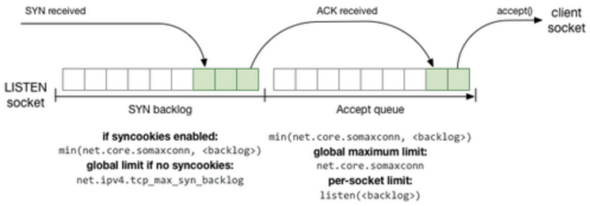
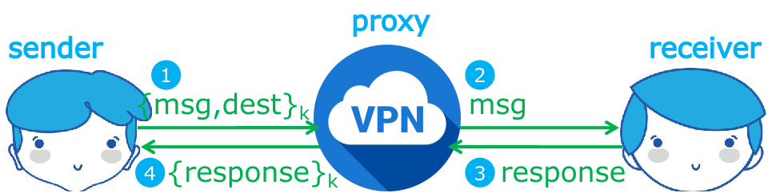
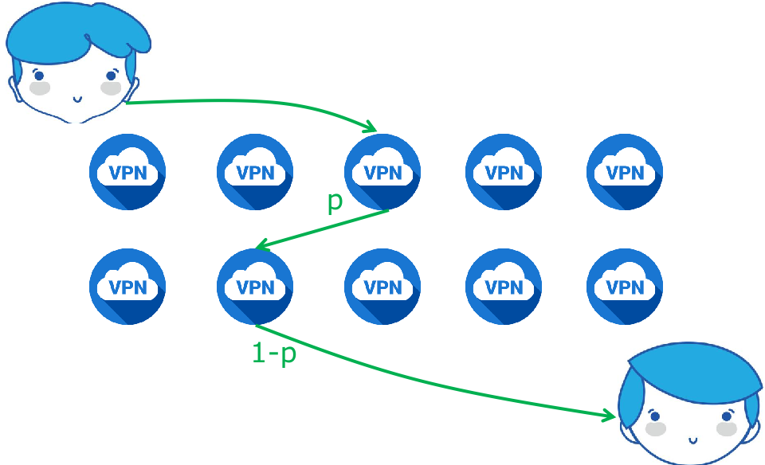
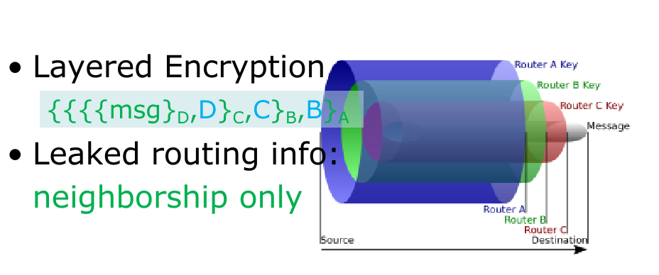
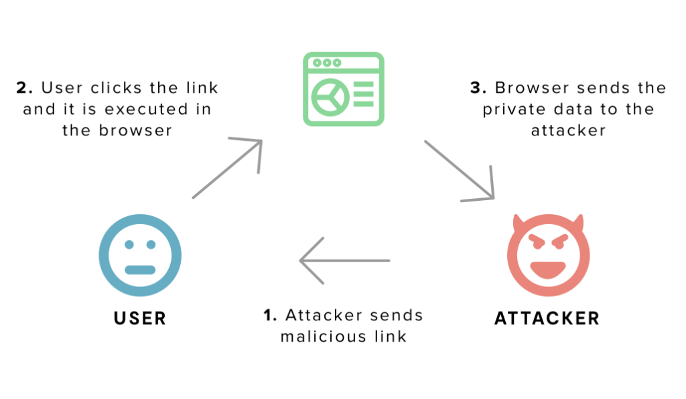
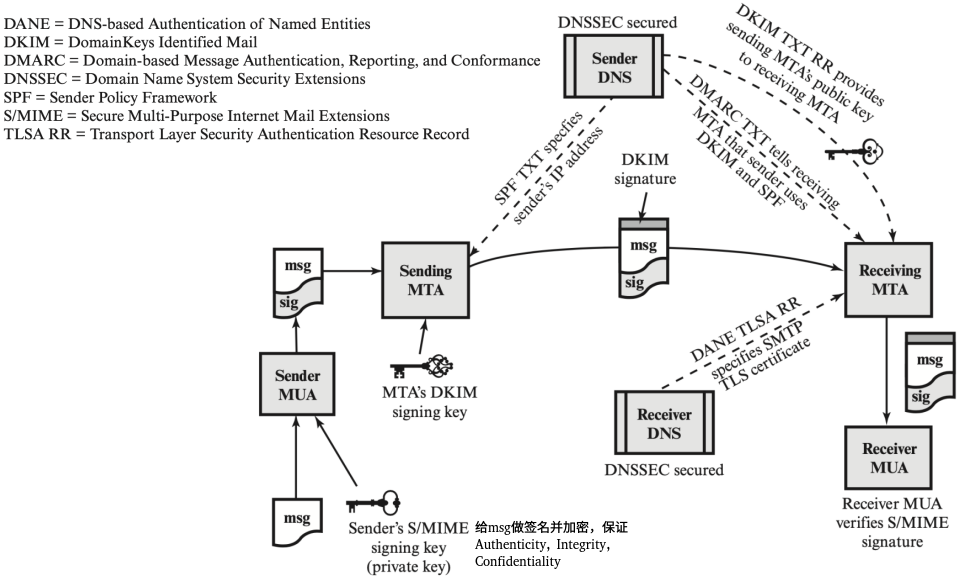
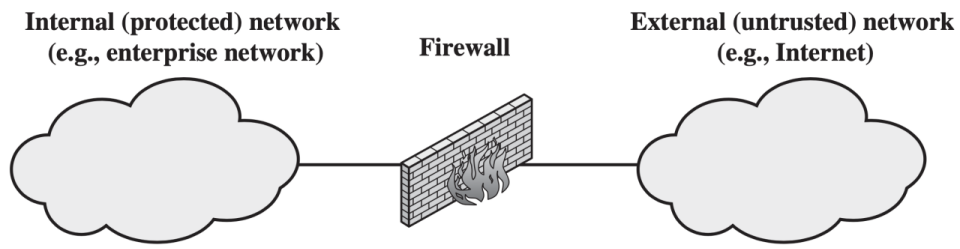
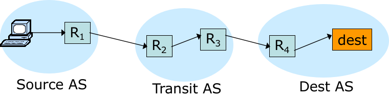
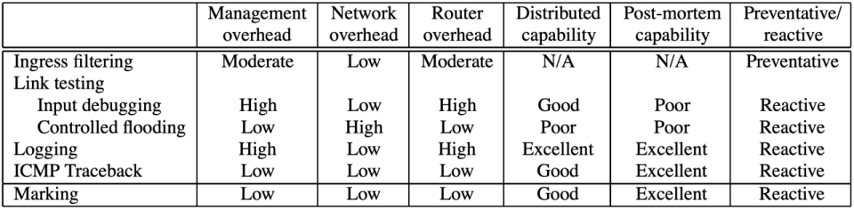
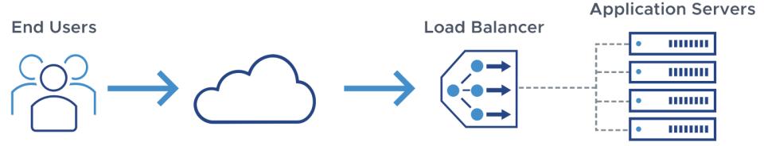

网络安全
CIA: confidentiality(保密性) integrity(完整性) availability(可用性)
DDoS
- Dos: Denial-of-Service Attack
- DDos: Distributed Denial-of-Service Attack
DDoS针对网络不同层次的攻击：
- Application layer: Server通常需要进行代价昂贵的密码学计算和数据库查询工作，可以用DDoS消耗Server算力。
- Transport layer: Server需要维护大量的连接/状态
- link/IP layer: 可以发送很多数据让交换机/路由器难以承受。
DDoS防御：
-
make server harder to be attacked:
- Ingress Filtering(入口过滤): ISP only forwards packets with legitimate source IP。在Source AS去做，但是同一个AS内部的IP欺骗无法预防。
- Traceback: router adds its own IP address to packet, victim reads path from packet。可以把路过的路由器都加上去，也可以选取部分加上去。
- Path Validation
- Alibi Routing
-
enrich server with more resources;
-
leverage the sources of others;
-
cost more resources from attacker
- Completely Automated Public Turing test to tell Computers and Humans Apart: 验证码
- Client Puzzles: 让用户做工作量证明，比如哈希计算
IP 欺骗是指创建源地址经过修改的 Internet 协议 (IP) 数据包，目的要么是隐藏发送方的身份，要么是冒充其他计算机系统，或者两者兼具。恶意用户往往采用这项技术对目标设备或周边基础设施发动 DDoS 攻击。
Ping Flood
利用ICMP Echo Request和ICMP Echo Reply。攻击者使用多个设备将许多ICMP Echo Request数据包发送到目标服务器，这时目标服务器需要将ICMP Echo Reply数据包发送到每个请求设备的 IP 地址作为响应，从而浪费目标服务器的带宽。
Ping Flood的攻击流量是对称的；目标设备接收的带宽量是每个机器人发送的总流量之和。
一个简单的防御方式是禁用服务器或者其他设备的ICMP功能。但是这也意味着正常的ICMP请求也失效。
TCP SYN Flood
当用户发送的SYN包时，Server就需要分配资源，返回SYN/ACK包等待ACK。**等待ACK队列(backlog)**的长度是有限制的。backlog队列满时，新的连接请求就会被丢弃。通过这种方式，攻击者发送大量的SYN，让正常的连接请求无法得到响应。
不过backlog entry是有时间限制的，如果一段时间（如3min）没有收到ACK，就会被丢弃。攻击者通过backlog length和timeout，可以以一定频率发送SYN让backlog一直处于满的状态。
防御方式
- SYN Cookie 是对TCP服务器端的三次握手协议作一些修改，专门用来防范SYN Flood攻击的一种手段。它的原理是，在TCP服务器收到TCP SYN包并返回TCP SYN+ACK包时，不分配一个专门的数据区，而是根据这个SYN包计算出一个cookie值。在收到TCP ACK包时，TCP服务器再根据那个cookie值检查这个TCP ACK包的合法性。如果合法，再分配专门的数据区进行处理未来的TCP连接。 把存储空间的消耗变成算力的消耗。
- Backscatter
Smurf Attack
- 首先，Smurf 恶意软件构建一个欺骗性数据包，其源地址设置为目标受害者的真实 IP 地址。
- 然后，数据包被发送到路由器或防火墙的 IP 广播地址，后者将请求发送到广播网络内的每个主机设备地址，因此网络上联网设备有多少，就会增加多少个请求。
- 网络中的每个设备都接收来自广播设备的请求，然后使用 ICMP Echo Reply 数据包响应目标的欺骗性地址。
- 目标受害者随后收到大量的 ICMP Echo Reply 数据包，可能会不堪重负，并导致对合法流量拒绝服务。
这是一个非对称的攻击。解决办法可以是在路由器或防火墙上禁止IP broadcast address。
DNS Amplification Attack
- 攻击者使用受损的端点将有欺骗性 IP 地址的 UDP 数据包发送到 DNS 递归服务器。数据包上的欺骗性地址指向受害者的真实 IP 地址。
- 每个 UDP 数据包都向 DNS 解析器发出请求，通常传递一个参数（例如“ANY”）以接收尽可能最大的响应。
- DNS 解析器收到请求后，会向欺骗性 IP 地址发送较大的响应。
- 目标的 IP 地址接收响应，其周边的网络基础设施被大量流量淹没，从而导致拒绝服务。
这是一个非对称的攻击。解决办法可以减少open resolvers，增加source IP verification
NTP Amplification Attack
原理和DNS放大攻击一样，不过是利用了另一个协议Network Time Protocol
- 攻击者使用僵尸网络将带有伪造 IP 地址的 UDP 包发送到启用了 monlist 命令的 NTP 服务器。每个包的伪造 IP 地址都指向受害者的真实 IP 地址。
- 每个 UDP 数据包使用其 monlist 命令向 NTP 服务器发出请求，导致较大的响应。
- 然后，服务器用结果数据响应欺骗性的地址。
- 目标的 IP 地址接收响应，其周边的网络基础设施被大量流量淹没，从而导致拒绝服务。
Memcached Attack和SSDP Attack也是类似的，不过是利用的不同的协议。都是非对称的流量攻击。
SSL/TLS Flood
这个的思路是利用非对称加密的性质，解密需要的算力远大于加密需要的算力。
HTTP Flood
- HTTP GET 攻击 - 在这种攻击形式下，多台计算机或其他设备相互协调，向目标服务器发送对图像、文件或其他资产的多个请求。当目标被传入的请求和响应所淹没时，来自正常流量源的其他请求将被拒绝服务。
- HTTP POST 攻击 - 一般而言，在网站上提交表单时，服务器必须处理传入的请求并将数据推送到持久层（通常是数据库）。与发送 POST 请求所需的处理能力和带宽相比，处理表单数据和运行必要数据库命令的过程相对密集。这种攻击利用相对资源消耗的差异，直接向目标服务器发送许多 POST 请求，直到目标服务器的容量饱和并拒绝服务为止。
Fragmented HTTP Flood
把HTTP请求分成很小的片段，隔很久的时间发一个（不能超时）。长时间保持消耗资源的连接处于活动状态。
SDN CrossPath Attack
Memcached attack
Secure Routing
安全问题：
Prefix hijking: Prefix hijacking happens when a network, whether intentionally or mistakenly, originates a prefix that belongs to another network without its permission, and the traffic will be sent to the wrong AS.
Path Tampering: 谎报邻居。Remove ASes from the AS path or Add ASes to the AS path.
解决方案：
RPKI: Resource Public Key Infrastructure(RPKI) certified mapping from ASes to public keys and IP prefixes. It is insufficient because malicious router can pretend to connect to the valid origin.
S-BGP: Each AS on the path cryptographically signs its announcement
Anonymous Communication
HTTPS is for Confidentiality, not for Anonymity.
匿名通信的目的是为了让网络上的其他节点无法知道sender和receiver之间的通信。有时也希望让receiver不知道是哪个sender在和他通信。
Relay
通过中继节点，类似代理。但是意味着我们需要信任中继节点。

Crowds Algorithm
每次有p的概率传递给下一个节点，1-p的概率直接传递该目的地。还是需要中间的节点可信。

POF-based Source Routing
不指定目的，而指定每一个路由器的转发端口，从而指定路径。
Onion routing
Tor是一个三重代理（也就是说Tor每发出一个请求会先经过Tor网络的3个节点），其网络中有两种主要服务器角色：
- 中继服务器：负责中转数据包的路由器，可以理解为代理；
- 目录服务器：保存Tor网络中所有中继服务器列表相关信息（保存中继服务器地址、公钥）。
为了发送洋葱数据包，发送消息者会从**“目录节点”（directory node）提供的列表中选取一些节点，并以这些规划出一条被称作“链”（chain）或“线路”（circuit）**的发送路径，这条路径将为传输数据包所用。为了确保发送者的匿名性，任一节点都无法知道在链中自己的前一个节点是发送者还是链上的另一节点；同理，任一节点也无法知道在链中自己的下一节点是目的地还是链上另一节点。只有链上的最后一个节点知道自己是链上最终节点，该节点被称作“出口节点”（exit node）。[11]
洋葱路由网络使用非对称加密，发送者从目录节点获得一把公开密钥，用之将要发送的消息加密并发送给链上的第一个节点，该节点又被称作入口节点（entry node）；其后与之创建连线和共享密钥。创建连线后发送者就可以通过这条连线发送加密过的消息至链上的第二个节点，该消息将只有第二个节点可以解密；当第二个节点收到此消息后，便会与前一个节点也就是入口节点同样的创建连线，使发送者的加密连线延伸到它，但第二个节点并不晓得前一个节点在链中的身份。之后按照同样原理，发送者通过入口节点和第二个节点的这条加密连线将只有第三个节点能解密的消息发送给第三个节点，第三节点同样的与第二个节点创建连线；借由重复相同的步骤，发送者能产生一条越来越长的连线，但在性能上仍有限制。[11]
当链上的连线都创建后，发送者就可以透过其发送资料并保持匿名性。当目的地回送资料时，链上的节点会透过同一条连线将资料回传，且一样对资料层层加密，但加密的顺序与发送者完全相反；原发送者收到目的地回传的资料时，将仅剩最内一层加密，此时对其解密就可拿到目的地回送的消息。

Web Security
SQL Injection
Sanitize user input: check or enforce that value/string does not have commands of any sort, disallow special characters, or escape input string
Escape input string: the input string should be interpreted as a string and not as a special char; to escape the SQL parser, use backslash \ in front of special characters, such as quotes or backslashes
Fundamental solution: separate data and code
CSRF
Same-Origin Policy：One origin should not be able to access the resources of another origin.
Origin = Protocol + Hostname + Port。
为了绕开同源策略，有两种办法：XSS 利用的是用户对指定网站的信任，CSRF 利用的是网站对用户网页浏览器的信任。
让用户点链接的方式，可以是一个钓鱼网站，也可能是垃圾邮件，等等。

所以一个解决办法，
- 进行Referer Validation，j7mj
- 使用CSRF Token。网站在用户登录时签发给用户一个CSRF Token，该token不存放在cookie中（存放在浏览器的local storage中），由网站前端js调用（识别
{{form.field_name}}），在提交表单时需要携带该token从而验证该表单来自于本网站（服务器端的token验证数据存放在session中）。这个token可以放在HTTP Header也可以放在HTTP Body传递。
XSS
-
Stored XSS：只要用户访问即可触发

-
Reflected XSS：需要让用户点击

防御方式：进行输入的检测，和输出的转义。只允许来自特定Origin的script被执行。
Email Security
安全威胁
Authenticity-related Threats 用户用私钥对消息的哈希进行加密（就是签名），服务器检查签名。
Integrity-related Threats: 做哈希
Confidentiality-related Threats 生成一个对称密钥对消息加密后传输，用接受者的公钥对对称密钥加密，发送消息加密的结果+密钥加密的结果。
Availability-related Threats

Traffic Analysis
Firewall

设计目标
- 所有的流量，internal -> external/external -> internal，都要经过防火墙
- 只有允许的流量才能经过防火墙
- 防火墙本身不能被渗透
设计技术
- Service Control: 选择开启什么服务（对应的端口）
- Direction Control: 特定的流量通过的方向
- User Control
- Behavior Control: 控制特定的服务能怎么样被利用
防火墙的种类
- Packet Filtering Firewall: 通过包的字段进行分析过滤
- Stateful Inspection Firewall: 不是通过单个包来分析，而是本地记录了一些额外的信息（State），结合包的字段综合分析。
- Application Proxy Firewall: 应用层的防火墙
- Circuit-Level Proxy Firewall:
IDS(Intrusion Detection System)
对用户的行为模式进行检测，检查攻击者的流量特征和正常用户流量特征的不同之处。发现异常流量的时候进行报警。
- Threshold detection: 阈值检测
- Profile-based detection (Signature): 和过去正常用户的流量特征对比，观察偏离情况。
Honeypot 蜜罐技术
IPS(Intrusion Prevention System )
IDS是被动的检测异常流量然后报警，IPS是主动的检测异常流量然后拦截。
| PARAMETER | FIREWALL | IPS | IDS |
|---|---|---|---|
| Abbreviation for | - | Intrusion Prevention System | Intrusion Detection System |
| Philosophy | Firewall is a network security device that filters incoming and outgoing network traffic based on predetermined rules | IPS is a device that inspects traffic, detects it, classifies and then proactively stops malicious traffic from attack. | An intrusion detection system (IDS) is a device or software application that monitors a traffic for malicious activity or policy violations and sends alert on detection. |
| Principle of working | Filters traffic based on IP address and port numbers | inspects real time traffic and looks for traffic patterns or signatures of attack and then prevents the attacks on detection | Detects real time traffic and looks for traffic patterns or signatures of attack and them generates alerts |
| Configuration mode | Layer 3 mode or transparent mode | Inline mode , generally being in layer 2 | Inline or as end host (via span) for monitoring and detection |
| Placement | Inline at the Perimeter of Network | Inline generally after Firewall | Non-Inline through port span (or via tap) |
| Traffic patterns | Not analyzed | Analyzed | Analyzed |
| Placement wrt each other | Should be 1st Line of defense | Should be placed after the Firewall device in network | Should be placed after firewall |
| Action on unauthorized traffic detection | Block the traffic | Preventing the traffic on Detection of anomaly | Alerts/alarms on detection of anomaly |
为了避开流量分析，有下面一些办法
- Encrypt traffic to hide payloads
- Use proxy to hide entire packets
- Introduce noise traffic to hide patterns
Traceback Analysis

最简单的方法就是看IP package的source IP，但是有IP spoofing的存在，并不准确。
[入口检测Ingress Filter]是一个简单有效的防止IP spoofing的方法，ISP only forwards packets with legitimate source IP.
中间的路由器有概率的记录下自己的IP Address，以便接受者知道包发送的路径。Edge Sampling：start and end IP addresses distance: no. of hops since edge stored
ICMP Traceback: When forwarding packets, routers can, with a low probability, generate a Traceback message that is sent along to the destination. With enough Traceback messages from enough routers along the path, the traffic source and path can be determined.
Path validation:
Proof of Consent(许可)
Proof of Provenance(起源)
Link Testing 从最近的Router，请求他帮你回溯到上一个Router，如此递归直到发现attack source。
- Input Debugging: find attack signature分享给上一个路由，然后关掉端口1-attack还在? - 关掉端口2 - attak还在? ...
- Controlled Flooding
post-attack traceback: 让中间的寄存器做日志记录数据包的转发。记日志是很大的开销，所以可以采用一些方法比如Bloom Filter

Network Protection
Honeywords： 比如，创建假的账号密码，如果发现了有人试图用这个假的账号密码，就说明有入侵者，报警。
Hash+Salt: 防止同样的密码在数据库中以同样的值存储，防止知道一个人是否在不同的网站使用了同一个密码，防止offline dictionary attacks(An offline dictionary attack is performed by obtaining a ciphertext generated using the password-derived key, and trying each password against the ciphertext) https://www.tomczhen.com/2016/10/10/hashing-security/
负载均衡

Access Control，有三个关键Subject，Object和Access Right。一个典型的例子就是Linux的权限管理机制。